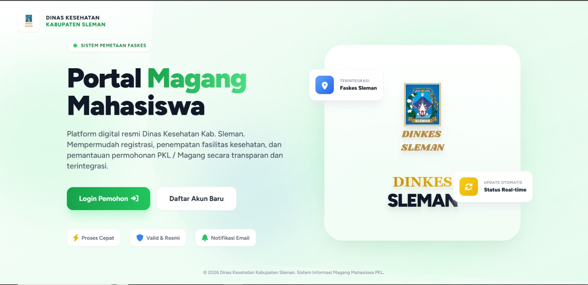
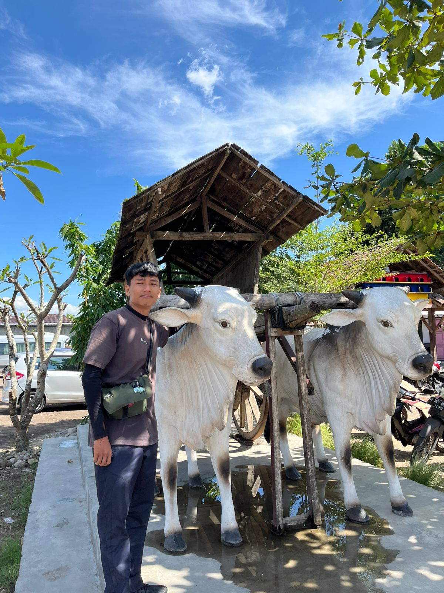
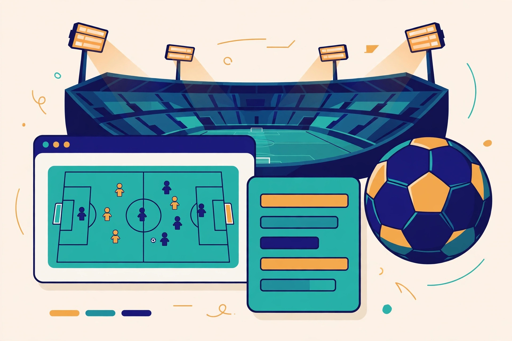
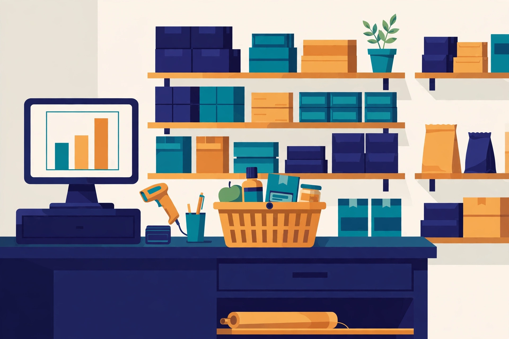
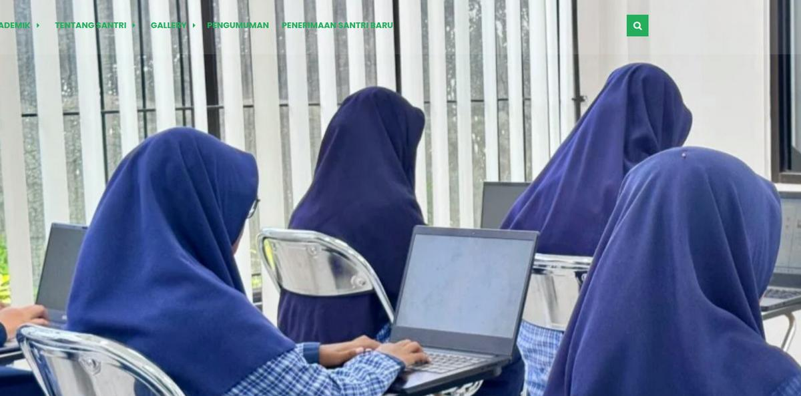
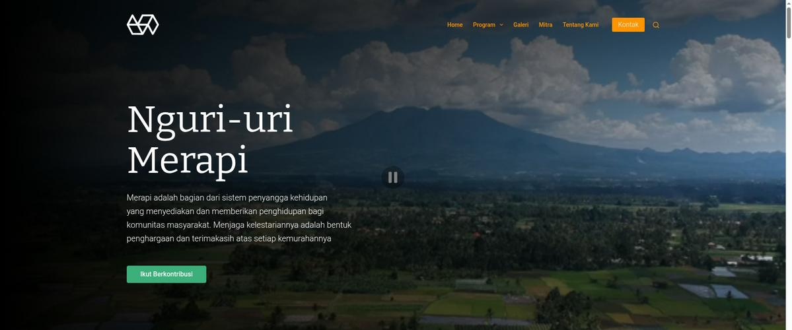
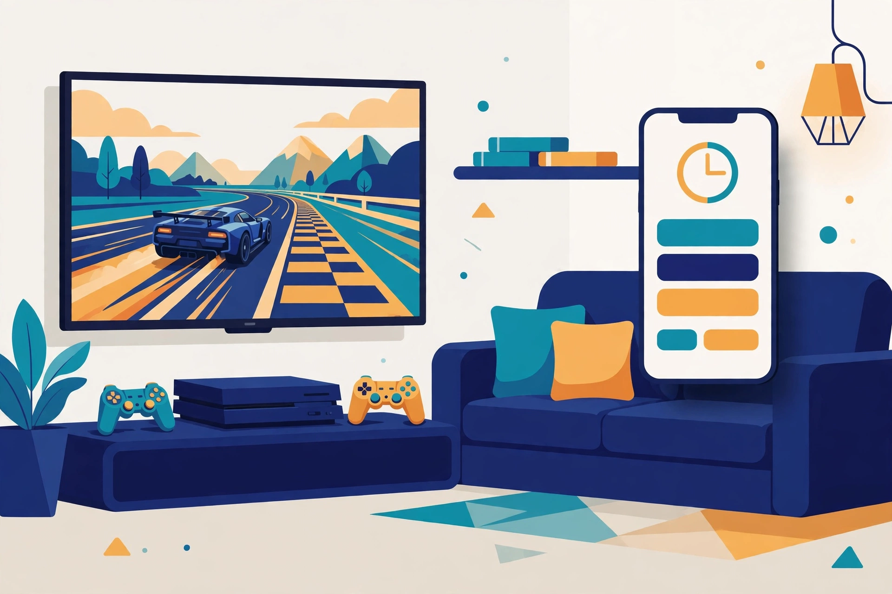

Proyek Unggulan
Portal Magang & E-Mapping Faskes
Dinas Kesehatan Kab. Sleman
Sistem pendataan dan pemetaan kebutuhan magang mahasiswa di fasilitas kesehatan se-Kabupaten Sleman.

Web Developer (Fullstack)
Lulusan S1 Sistem Informasi Universitas Respati Yogyakarta yang berfokus pada pengembangan aplikasi web dan mobile secara fullstack — berpengalaman membangun sistem untuk instansi pemerintah daerah, perusahaan IT, lembaga pendidikan, dan organisasi.

Yogyakarta, Indonesia
Tentang Saya
Saya adalah lulusan S1 Sistem Informasi Universitas Respati Yogyakarta (2026, IPK 3,41) — web developer fullstack yang membangun aplikasi web dan mobile dengan cara kerja modern: cepat, terstruktur, dan terbantu kecerdasan buatan (AI).
Stack utama saya meliputi PHP (Laravel, CodeIgniter), JavaScript & TypeScript, React, Next.js, Node.js, Flutter, MySQL, PostgreSQL, Supabase, dan REST API, dengan pendekatan berorientasi objek (OOP), konsep MVC, dan version control Git. Di luar itu, saya aktif memanfaatkan AI dalam proses pengembangan — mulai dari AI-assisted development dengan Claude dan Gemini, prompt engineering, integrasi AI API seperti Gemini API, hingga otomasi alur kerja berbasis AI agar pengembangan lebih cepat tanpa mengorbankan kualitas.
Pengalaman saya meliputi pembangunan sistem untuk instansi pemerintah daerah, perusahaan IT, lembaga pendidikan, dan organisasi — mulai dari portal magang dan sistem pemetaan kebutuhan untuk dinas kesehatan, portal berita, aplikasi point of sale, hingga aplikasi billing mobile dan desktop. Saya terbiasa mempelajari dan mengadopsi teknologi baru dengan cepat, dan terus mengikuti perkembangan AI agar solusi yang saya bangun tetap relevan dengan kebutuhan zaman.
Portofolio
Tujuh proyek yang telah saya kerjakan untuk instansi, perusahaan, lembaga pendidikan, dan organisasi.
Dinas Kesehatan Kab. Sleman
Sistem pendataan dan pemetaan kebutuhan magang mahasiswa di fasilitas kesehatan se-Kabupaten Sleman.


PT. Winnicode Garuda Teknologi
Portal berita olahraga dengan jadwal dan skor sepak bola serta panel admin.
Kunjungi Website
PT. Mahirsoft Indonesia
Aplikasi kasir: pengelolaan stok dan kategori barang, pendataan sales/customer, laporan keuangan.

Yayasan Pondok Pesantren Dayah Sidiq
Portal berita, galeri media, informasi akademik santri, dan PMB online.
Kunjungi Website
Forum Peduli Lingkungan Pecinta Alam Lereng Merapi
Portal berita dan edukasi organisasi pecinta alam Lereng Merapi.
Kunjungi Website
Perusahaan Rental PlayStation — Jawa Barat
Aplikasi billing untuk perusahaan rental PlayStation di Jawa Barat.
Sistem Jaringan Lokal (LAN)
Sistem pengelolaan dan pemantauan komputer klien dalam jaringan lokal dengan billing time terpusat.
Kompetensi
Riwayat
Dinas Kesehatan Kabupaten Sleman
2026Membangun Portal Magang Mahasiswa dan sistem e-mapping kebutuhan magang fasilitas kesehatan se-Kabupaten Sleman.
PT. Winnicode Garuda Teknologi — Yogyakarta
Membangun website portal berita olahraga (sportnews.winnicode.com) dengan panel admin.
Predikat kelulusan magang: Sangat Baik Sekali (A)Yayasan Pondok Pesantren Dayah Sidiq — Aceh
Administrasi, koordinasi acara, dokumentasi, dan pembangunan website resmi pesantren (dayahsidiq.com).
Sertifikasi
Sembilan sertifikat pelatihan dan sertifikasi yang mendukung kompetensi saya sebagai web developer. Klik gambar sertifikat untuk melihatnya lebih besar.
Codepolitan
VSGA Kominfo
Dicoding Indonesia
Dicoding Indonesia
Dicoding Indonesia
Winnicode
InfraDigital Foundation
InfraDigital Foundation
Hacktiv8 — Maju Bareng AI
Kontak
Saya terbuka untuk peluang kerja dan kerja sama pengembangan aplikasi web maupun mobile. Silakan hubungi saya melalui kanal berikut:
Unduh CV lengkap saya dalam format PDF untuk keperluan seleksi administrasi dan arsip perusahaan/instansi Anda.
Unduh CV (PDF)Berdomisili di Yogyakarta, Indonesia